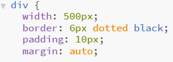

Hej
Frederik Lykke-Rasmussen
Her har jeg prøvet det ene af efter det andet, været frustreret når det ikke har ville virke og glad, når jeg fandt ud af hvorfor.
Links jeg bruger, når jeg er lost.
Link til lectio
lectio
Link til github
github
Her er forhåbentligt en boks. Hura for det, det var der faktisk, her kommer en tilfældig tekst fordi jeg lige vil teste om alt teksten forbliver inde i boksen. Da jeg stod op i dag var jeg meget træt, er jeg stadig, men det er der desværre ikke meget at gøre ved. Nå, teksten blev i boksen, dejligt.
For at få lavet denne boks har jeg under mit ccs dokument konstrueret en boks rundt om teksten på denne side. boksen er blevet defineret som "div", og derefer har jeg valgt bredde, at rammen skulle være dottet mm. Når boksens koder er lavet i ccs dokumentet, refereres der til den inden og efter teksten som jeg ville have derind.
Her er et billede af koden til boksen fra css.

"width" styrer bredden af boksen."border" består af tre dele, "6px" er tykkelsen på rammen, 6 pixels, "dotted" gør rammen til prikker/dots."padding" styrer mellemrum mellem tekst og ramme og "margin" styrer om boksens placering, i dette tilfælde centrerer "auto" den.